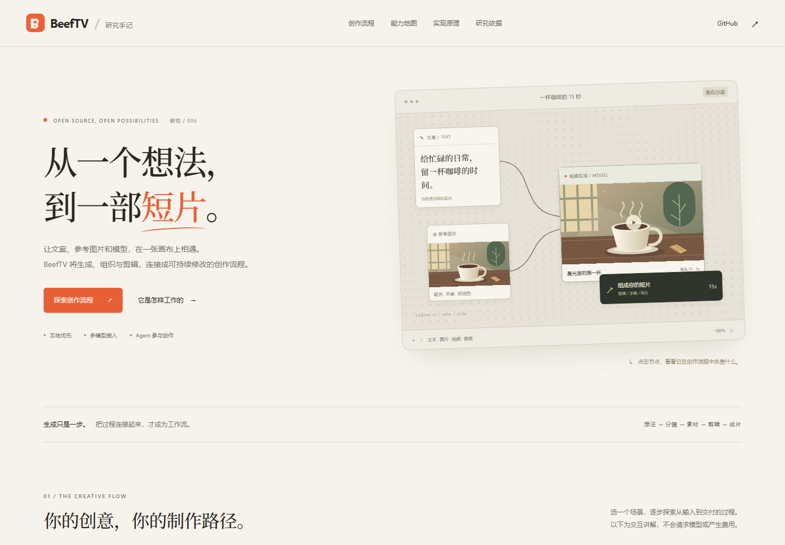

React / Wails
画布与时间线界面
B
BeefTV
开源项目研究 / 006
从一个想法，到一部短片。
用无限画布连接创作上下文，用模型与 Agent 执行生成，再通过时间线与 FFmpeg 输出成片。
定位：AI 视频创作工作台单用户 · 本地优先多模型 · 可扩展核心价值：组织过程、执行任务、保存关系、持续迭代
01
入口 → 核心创作链路 → 出口
INPUT / WORKFLOW / OUTPUTINPUT / 你提供什么
入口与输入
创作意图文案、提示词、故事目标、风格与镜头要求
参考素材图片、视频、音频与已有生成结果引用类型和数量由模型／协议支持范围决定
执行配置模型渠道、Base URL、API Key、模型与参数
操作入口桌面画布 · 内置 Pi 对话
外部 Agent 的 MCP / CLI
外部 Agent 的 MCP / CLI
CORE / 可以自行设计并反复修改
让每个镜头都有意图、参考、任务与结果。
01
创意
组织
文本与媒体节点
明确参考关系
02
分镜
设计
拆解镜头草稿
编写提示词
03
多模型
生成
配置参数
提交异步任务
04
剪辑
编排
裁切与排序
声音和字幕
05
导出
迭代
渲染、审查
继续修改版本
保留节点、素材与结果关系 → 继续生成或调整
你控制：内容、提示词、参考关系、模型支持的参数、镜头顺序和时间线。
模型决定：生成画面的质量、动作准确度与人物一致性。
无限画布让工作流直观可见；后端、模型与剪辑执行器让它真正产生结果。
OUTPUT / 得到什么
产物与出口
生成素材文字、图片、视频、音频具体生成模式取决于接入服务
最终视频经时间线渲染的可播放、可下载成片
可继续编辑的项目画布、素材库、任务记录、版本与引用关系
自动化结果工具操作回执、任务状态与产物引用CLI / MCP 接入自建流程
02
六种能力，连接一次完整制作
CAPABILITY MAP基于固定提交的源码与文档✦
多模态生成
接入文本、图像、视频和音频模型；将提示词与参考素材转换为对应请求。
文生图 · 图生图 · 文／图／视频参考生视频（按渠道）
⌘
无限画布与素材管理
节点承载内容，连线表达引用；本地保存素材、项目和任务，复用已有结果。
画布组织 · 素材绑定 · 生成记录 · 版本保护
▤
分镜与批量创作
组织镜头草稿，维护多任务提示词与参考关系，让叙事形成镜头列表。
镜头规划 · 批量创作表 · 全局提示词 · 参考同步
⌁
Pi 创作助手
读取画布与媒体，修改节点和模型配置、连接参考、调整时间线、提出生成方案。
持久会话 · 业务工具 · 权限范围 · 付费生成确认
☷
剪辑、媒体加工与导出
裁切／合并视频、提取音频；按时间线处理顺序、时长、音量和字幕并输出成片。
剪辑计划 → 原生 FFmpeg / FFmpeg.wasm
↗
模型适配与开放自动化
配置模型渠道及协议，使用能力插件与所选 Skills，通过 MCP / CLI 接入外部 Agent。
统一业务层 · 渠道适配 · 工具目录 · 可编程操作
03
实现原理与本次演示效果
HOW IT WORKS / DEMO分工：界面组织 / 助手判断 / 后端验证与执行
手动操作
内置 Pi
会话 → 模型判断
调用业务工具
外部 Agent
MCP / CLI
自行管理审批
↓
Go 本地业务层 / 任务执行
检查参数、身份与素材归属，处理版本冲突
持久化任务 → 执行与查询 → 保存结果 → 绑定画布
操作去重与撤销；内置助手付费生成经界面确认
SQLite + 本地资源目录
项目、画布与素材元数据
媒体文件、渠道配置和任务记录
重启后恢复工作区
协议适配 → 模型供应商
请求创建 / 任务查询 / 结果下载
参考素材检查与传输
根据具体模型能力选择参数
Agent 循环：读上下文 → 作判断 → 调工具 → 检查结果 → 继续迭代。新会话采用 Pi Durable；Go 保存业务回合、权限和操作记录。
画布使用视口处理与网格空间索引优化；本研究未测端到端性能。
研究网页的实际截图
本页交互已验证
截图来自本次独立研究网页。画布与插画为原创示意，未调用模型；它展示制作关系，不代表上游应用界面或真实视频生成效果。
04
应用场景、使用效果与可扩展方向
USE / VALUE / EXTENSION适用场景
01
广告与品牌短视频
产品／品牌素材 → 多镜头草稿 → 字幕与成片
02
产品展示与电商内容
参考图 → 整体与细节镜头 → 名称及节奏编排
03
短剧分镜与视觉预演
角色、场景与剧情 → 镜头规划 → 风格试验
04
知识表达与倡议短片
文案／旁白 → 视觉素材 → 字幕与声音叙事
05
多模型与 Agent 实验
复用参考关系，比较模型与提示词，接入自建工具链
使用效果与工程价值
过程可见，素材可复用把意图、参考、任务和结果留在同一项目中，方便追踪镜头来源。
生成与剪辑形成闭环模型产物可回到画布，进入时间线，再播放检查并继续修订。
人工与助手共同操作自然语言提出修改，业务工具执行局部操作，保留参数检查与撤销。
工作区本地持久化项目与媒体由本地工作区管理，任务状态和关系可恢复。
维护者报告的实际案例v1.7.14 候选验收：文／图生图与文／图／视频参考生成，形成 15 秒阅读短片，并按自然语言修订时间线、渲染和下载。
这是上游验收记录，本项目未重新执行。
这是上游验收记录，本项目未重新执行。
↳决定实际使用效果的四个边界
模型能力生成质量、角色一致性与动作效果需逐模型验证；可发现模型不等于已验收。
本地与联网工作区本地保存，执行生成时相关提示词和参考媒体可能发送给供应商。
运行与费用需要配置模型服务；生成可能收费，原生桌面构建需 Go / Bun / Wails。
验证范围本项目完成源码研究与网页交互验证，尚未运行上游桌面版或付费生成。
研究重点：画布如何表达上下文、异步生成如何可靠落地、Agent 如何通过受控工具操作项目、剪辑计划如何输出成片。